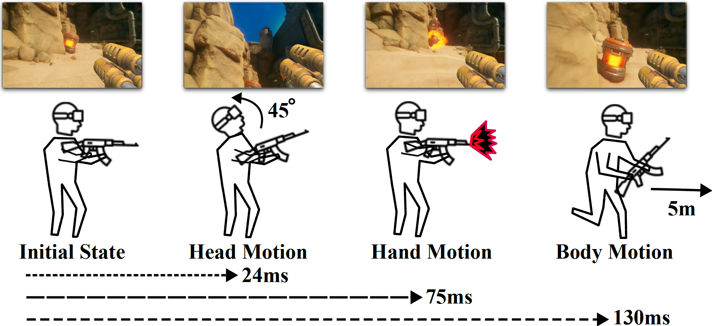
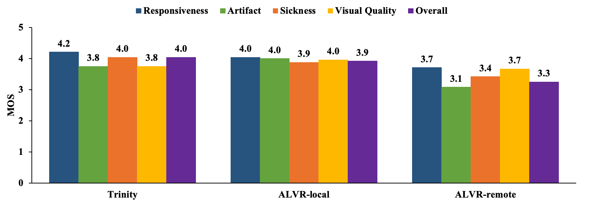

We present Trinity, a novel and practical solution that enables dynamic game streaming from cloud servers to virtual reality (VR) headsets. Achieving the stringent motion-to-photon (MTP) latency requirement of under 25ms presents a critical challenge in VR game streaming. Existing approaches primarily support specific actions (e.g., head movement), resulting in an MTP latency gap with other actions subject to round-trip delays, thereby degrading overall user quality of experience (QoE). To bridge the MTP latency gap, Trinity proposes a novel approach grounded in the observation that player interactions exhibit heterogeneous latency requirements. Specifically, we classify user inputs into three distinct motion categories: head motion, hand motion, and body motion. By aligning latency levels with users’ perceptual sensitivity to different types of motion and strategically introducing controlled delays to the hand motion, Trinity mitigates the perceptual impact of latency discrepancy across motions. We evaluate Trinity with a highly latency-sensitive first-person shooting game streamed from a remote server to a VR headset. Real-world user studies demonstrate that Trinity delivers a user experience comparable to a local streaming setup, despite operating under network-induced delays.

Trinity-R: all motions are rendered at server side and large MTP latency hurt QoE.
Trinity-L: head motion are rendered at VR headset with minimal latency, but MTP latency gap still exists and hurts QoE.
Trinity: render the hand objects with adatpive latency to brige the gap.
Trinity achieves comparable performance compared to the local streaming setup over all metrics.
